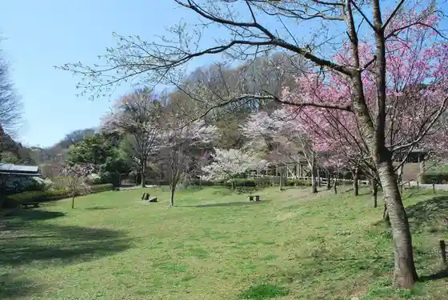
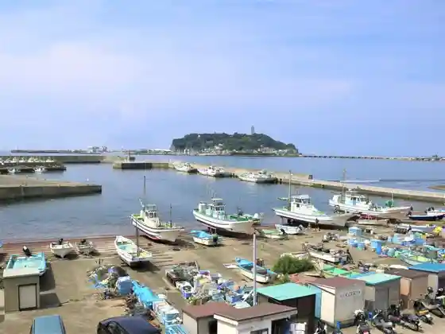
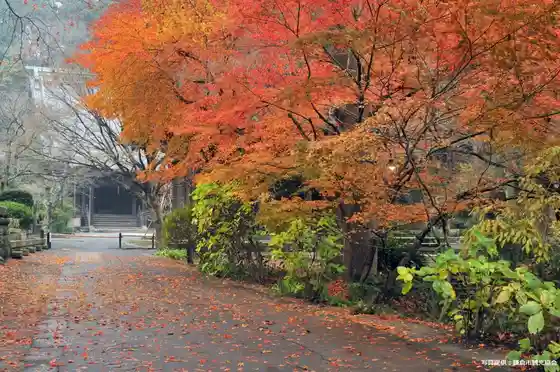
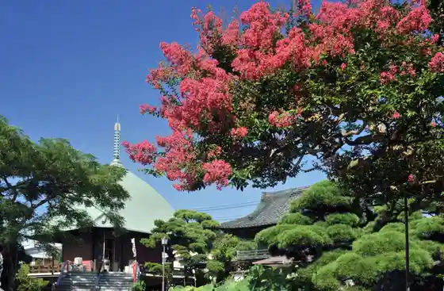

Kamakura Chuo Park
Kamakura, Kanagawa · 0467-45-2750 · Official / source link

Koshigoe Fishing Port
Kamakura, Kanagawa · 0467-23-3000 · Official / source link

Myohon Tera
Kamakura, Kanagawa · 0467-22-0777 · Official / source link

Hongaku Tera
Kamakura, Kanagawa · 0467-22-0490 · Official / source link

Ankoku Ron Tera
Kamakura, Kanagawa · 0467-22-4825 · Official / source link
Anyo In
Kamakura, Kanagawa · 0467-22-0806 · Official / source link
Egara Ten Shrine
Kamakura, Kanagawa · 0467-25-1772 · Official / source link
Engaku Tera
Kamakura, Kanagawa · 0467-22-0478 · Official / source link
Sugimoto Tera
Kamakura, Kanagawa · 0467-22-3463 · Official / source link
Ofuna Kan'onji
Kamakura, Kanagawa · 0467-43-1561 · Official / source link
Enno Tera
Kamakura, Kanagawa · 0467-25-1095 · Official / source link
Amanawa Jinmei Miya
Kamakura, Kanagawa · Official / source link
Kamakura Literature Museum
Kamakura, Kanagawa · Official / source link
Kencho Tera
Kamakura, Kanagawa · 0467-22-0981 · Official / source link
Jomyo Tera Ki Izumi Iori
Kamakura, Kanagawa · 0467-22-8638 · Official / source link
Zeniarai Benzaiten Uga Fuku Shrine
Kamakura, Kanagawa · 0467-25-1081 · Official / source link
Dankazura
Kamakura, Kanagawa · 0467-22-0315 · Official / source link
Tsuruoka Hachiman Shrine
Kamakura, Kanagawa · 0467-22-0315 · Official / source link
Hase Tera
Kamakura, Kanagawa · 0467-22-6300 · Official / source link
Minamotonoyoritomo no Haka
Kamakura, Kanagawa · Official / source link
Kamakura Great Buddha Dono Takanori In
Kamakura, Kanagawa · 0467-22-0703 · Official / source link
Hokoku Tera
Kamakura, Kanagawa · 0467-22-0762 · Official / source link
Kita Kamakura Ko Minka Museum
Kamakura, Kanagawa · 090-4121-759 · Official / source link
Sanzaigaike Forest Park
Kamakura, Kanagawa · 0467-47-1176 · Official / source link
Kamakura Yama no Sakura Namiki
Kamakura, Kanagawa · Official / source link
Genji Yama Park
Kamakura, Kanagawa · 0467-24-1342 · Official / source link
Sho Town Tori
Kamakura, Kanagawa · Official / source link
Kanagawa Prefectural Kindai Art Museum Kamakura Bekkan
Kamakura, Kanagawa · 0467-22-5000 · Official / source link
Kita Kamakura Ha Shomei Art Museum
Kamakura, Kanagawa · 0467-24-4860 · Official / source link
Kamakura Kaburaki Kiyokata Kinen Art Museum
Kamakura, Kanagawa · 0467-23-6405 · Official / source link
Kamakura Cho Museum
Kamakura, Kanagawa · 0467-25-1502 · Official / source link
Kamakura Wagashi Tsukuri Experience (Temari)
Kamakura, Kanagawa · Official / source link
Tore Keyaki Namiki
Kamakura, Kanagawa · Official / source link
Ine Village Ga Saki
Kamakura, Kanagawa · Official / source link
Kari Sho Saka
Kamakura, Kanagawa · Official / source link
Fueda Park (Fujisan Viewpoint)
Kamakura, Kanagawa · 0467-32-0559 · Official / source link
Kamakura Miya
Kamakura, Kanagawa · 0467-22-0318 · Official / source link
Komyo Tera
Kamakura, Kanagawa · 0467-22-0603 · Official / source link
Hidekatsu Tera
Kamakura, Kanagawa · 0467-22-3534 · Official / source link
Kaizo Tera
Kamakura, Kanagawa · 0467-22-3175 · Official / source link
Jokomyo Tera
Kamakura, Kanagawa · 0467-22-1359 · Official / source link
Jochi Tera
Kamakura, Kanagawa · 0467-22-3943 · Official / source link
Jomyo Tera
Kamakura, Kanagawa · Official / source link
Engaku Tera Ki Gen In
Kamakura, Kanagawa · Official / source link
Yoshiya Nobuko Memorial Museum
Kamakura, Kanagawa · Official / source link
Jinrikisha Ebisu Ya Kamakura Mise
Kamakura, Kanagawa · 090-5366-789 · Official / source link
Kamakura Nobutai
Kamakura, Kanagawa · 0467-22-5557 · Official / source link
Gurobu Kamakura
Kamakura, Kanagawa · 0467-23-6667 · Official / source link
Meigetsuin
Kamakura, Kanagawa · 0467-24-3437 · Official / source link
San no Torii
Kamakura, Kanagawa · 0467-22-0315 · Official / source link
Taiko Hashi
Kamakura, Kanagawa · 0467-22-0315 · Official / source link
Maidono
Kamakura, Kanagawa · 0467-22-0315 · Official / source link
Oicho
Kamakura, Kanagawa · 0467-22-0315 · Official / source link
Maruyama Inari Sha
Kamakura, Kanagawa · 0467-22-0315 · Official / source link
Kamakura Kokuho Kan
Kamakura, Kanagawa · 0467-22-0753 · Official / source link
Hata Ue Benzaiten Sha
Kamakura, Kanagawa · 0467-22-0315 · Official / source link
Kai Sui Jizo
Kamakura, Kanagawa · 0467-22-1191 · Official / source link
Meigetsu Tani
Kamakura, Kanagawa · Official / source link
Kachi Ue Ken Lookout
Kamakura, Kanagawa · 046-235-8439 · Official / source link
Ohira Yama
Kamakura, Kanagawa · Official / source link
Kamakura Rekishi Bunka Koryu Kan
Kamakura, Kanagawa · 0467-73-8501 · Official / source link
Masamune Kogei Bijutsu Seisakusho
Kamakura, Kanagawa · 0467-22-3962 · Official / source link
Joju In
Kamakura, Kanagawa · 0467-22-3401 · Official / source link
Kamakura Seaside Park Yuigahamachi Ku
Kamakura, Kanagawa · 0467-45-2750 · Official / source link
Hakko Do
Kamakura, Kanagawa · Official / source link
Wakamiya Oji
Kamakura, Kanagawa · Official / source link
Kamakura Kimo no Sho Town
Kamakura, Kanagawa · 0467-405-769 · Official / source link
Kita Kamakura Takara no Niwa
Kamakura, Kanagawa · 0467-25-5742 · Official / source link
Kamakura Hamu Tomioka Shokai
Kamakura, Kanagawa · 0120-81-8586 · Official / source link
Experience Kobo Hase to
Kamakura, Kanagawa · Official / source link
Kita Kamakura Takara Iori (Chashitsu)
Kamakura, Kanagawa · Official / source link
Ofuna Nakadori Shopping Street
Kamakura, Kanagawa · Official / source link
Hibiya Kadan Ofuna Furawa Center
Kamakura, Kanagawa · 0467-46-2188 · Official / source link
Kamakura no Fukuro Forest
Kamakura, Kanagawa · 0467-22-8977 · Official / source link
Ichijo Ekan Sanso
Kamakura, Kanagawa · 0467-53-7900 · Official / source link
Yuigahama
Kamakura, Kanagawa · 0467-61-3884 · Official / source link
Great Buddha Settsu
Kamakura, Kanagawa · 0467-61-3857 · Official / source link
Myoho Tera
Kamakura, Kanagawa · 0467-22-5813 · Official / source link
Manpuku Tera
Kamakura, Kanagawa · 0467-31-3612 · Official / source link
Takara Kai Tera
Kamakura, Kanagawa · Official / source link
Kosoku Tera
Kamakura, Kanagawa · 0467-22-6864 · Official / source link
Mitsunori Tera
Kamakura, Kanagawa · 0467-22-2077 · Official / source link
Gokuraku Tera
Kamakura, Kanagawa · 0467-22-3402 · Official / source link
Kamakura Yama Shrine
Kamakura, Kanagawa · Official / source link
Kamakura Nokyo Ren Sokubaijo
Kamakura, Kanagawa · 0467-44-3041 · Official / source link
Rikkoku Miyama Forest Park
Kamakura, Kanagawa · Official / source link
Hase Bettei
Kamakura, Kanagawa · Official / source link
Kamakura Geijutsu Kan
Kamakura, Kanagawa · 0467-48-5500 · Official / source link
Kamakura Bushi Taiken Tokoro Fukazawa Toride
Kamakura, Kanagawa · Official / source link
Kuhon Tera
Kamakura, Kanagawa · 0467-22-3404 · Official / source link
Goryo Shrine
Kamakura, Kanagawa · 0467-22-3251 · Official / source link
Kamakura Bunka Kan Tsuruoka Museum
Kamakura, Kanagawa · 0467-22-0315 · Official / source link
Imamiya
Kamakura, Kanagawa · 0467-22-0315 · Official / source link
Yui Wakamiya
Kamakura, Kanagawa · 0467-22-0315 · Official / source link
Sasuke Inari Shrine
Kamakura, Kanagawa · Official / source link
Shichirigahama
Kamakura, Kanagawa · Official / source link
Zaimoku Za Beach
Kamakura, Kanagawa · 0467-61-3884 · Official / source link
Rentasaikuru Kamakura Ekimae Mise
Kamakura, Kanagawa · 04-6724-2319 · Official / source link
Zuisenji
Kamakura, Kanagawa · 0467-22-1191 · Official / source link
Eikoku Anteiiku Museum BAM Kamakura
Kamakura, Kanagawa · 0467-84-8689 · Official / source link
Ishigama Garden Terasu
Kamakura, Kanagawa · 0467-22-8851 · Official / source link
Ofuna Ken Kamakura Homu Baiten
Kamakura, Kanagawa · 0467-44-2005 · Official / source link
Shirasuya Koshigoe Gyoko Mae Mise
Kamakura, Kanagawa · 0467-33-0363 · Official / source link
KAMAHAM PLUS+ Kamakura Sho Town Main Shop
Kamakura, Kanagawa · 0467-25-1864 · Official / source link
Kamakura Beniya Hachiman Shrine Mae Main Shop
Kamakura, Kanagawa · 0467-22-3492 · Official / source link
Toyoshima Ya Main Shop
Kamakura, Kanagawa · 0467-25-0810 · Official / source link
Tenshin Iori
Kamakura, Kanagawa · 0467-55-9350 · Official / source link
Yamazato Dankazura Mise
Kamakura, Kanagawa · 0467-24-9244 · Official / source link
Niikura Sanchi no Tezu Kuri Jamu Kamakura Mise
Kamakura, Kanagawa · 046-855-5706 · Official / source link
Kamakura Kokon Kankojigyo Mono Muke UV
Kamakura, Kanagawa · 0467-81-4435 · Official / source link
Ine Village Ke Saki Onsen
Kamakura, Kanagawa · 0467-22-7199 · Official / source link
Kanto Shoshutsu Mise ! Kamakura Sho Town Tori Ni (Arashi Yu Kamakura Bettei) Opun !!
Kamakura, Kanagawa · Official / source link
Ume Taiken Senmonten (Cho Ya) Kamakura Mise
Kamakura, Kanagawa · Official / source link
Ichijo Ekan Sanso Kankojigyo Mono Muke UV
Kamakura, Kanagawa · Official / source link
Kamakura Kanko Hall Aji Tei
Kamakura, Kanagawa · 0467-23-5700 · Official / source link
Kankojigyo Mono Muke UV
Kamakura, Kanagawa · Official / source link
Yuigahama Beach
Kamakura, Kanagawa · 0467-61-3884 · Official / source link
Kakuon Tera
Kamakura, Kanagawa · 0467-22-1195 · Official / source link
Kamakura Kawa Kita Eiga Memorial Museum
Kamakura, Kanagawa · 0467-23-2500 · Official / source link